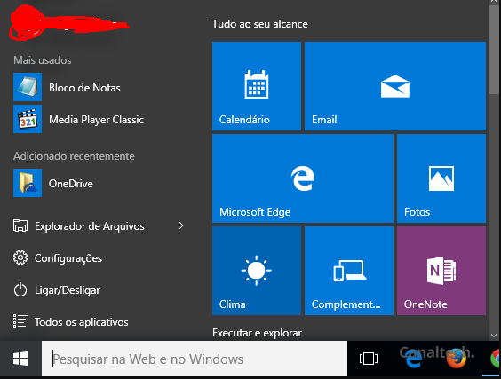

Windows Básico
Aprenda o básico sobre o sistema operacional Windows, suas funções principais e dicas úteis.
O que devo saber sobre o Windows?
Como mencionado anteriormente, o Windows é um sistema operacional responsável por usar os componentes do computador para fornecer uma interface amigável e diversas funcionalidades ao usuário.
Coisas úteis
Área de Trabalho
- A Área de Trabalho é a tela principal do Windows.
- Você pode criar atalhos para programas e arquivos nesta área.

Barra de Tarefas
- A Barra de Tarefas está localizada na parte inferior da tela.
- Ela contém o botão "Iniciar", que abre o menu principal.
- Ícones de programas abertos e atalhos também são exibidos na Barra de Tarefas.
Menu Iniciar
- O menu Iniciar é o ponto de partida para acessar aplicativos, configurações e arquivos.
- Você pode pesquisar programas digitando na caixa de pesquisa do menu.

Explorador de Arquivos
- O Explorador de Arquivos é usado para gerenciar seus arquivos e pastas.
- Você pode abri-lo clicando no ícone da pasta na Barra de Tarefas ou no menu Iniciar.
Gerenciador de Tarefas
- O Gerenciador de Tarefas é acessado pressionando Ctrl + Shift + Esc.
- Ele permite visualizar e encerrar processos e aplicativos em execução.
Configurações do Sistema
- Você pode acessar as configurações do sistema pressionando as teclas Windows + I.
- Isso permite personalizar várias configurações, como papel de parede, rede, dispositivos, entre outros.
Comandos úteis que podem ajudar
- Ctrl + C: Copia o texto ou arquivo selecionado
- Ctrl + V: Cola o texto ou arquivo copiado ou cortado
- Ctrl + X: Corta o texto ou arquivo selecionado
- Ctrl + Z: Desfaz a última ação
- Ctrl + Y: Refaz a última ação desfeita
- Ctrl + S: Salva o arquivo atual
- Ctrl + P: Abre a opção de impressão
- Ctrl + F: Abre a caixa de pesquisa
- Alt + Tab: Alterna entre aplicativos